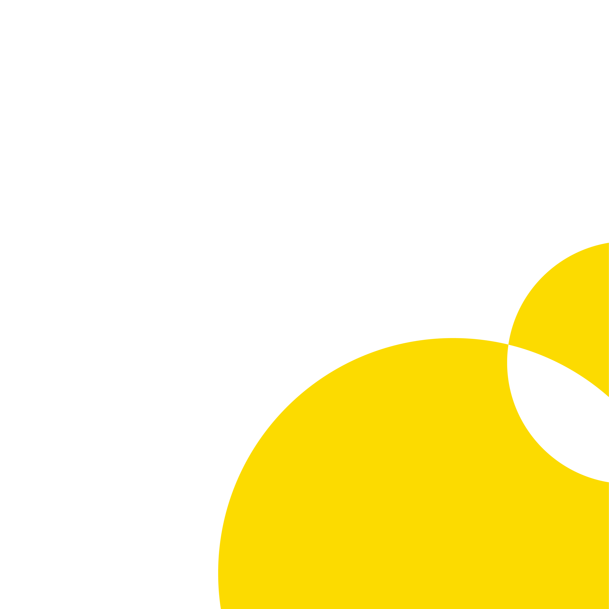

Справочник по теории
графического дизайна
Практические инструменты и правила визуальной коммуникации
Интерактивная база знаний для дизайнеров. Изучайте теорию через наглядные примеры.
Выберите раздел в навигации, чтобы начать работу с конкретным инструментом.
